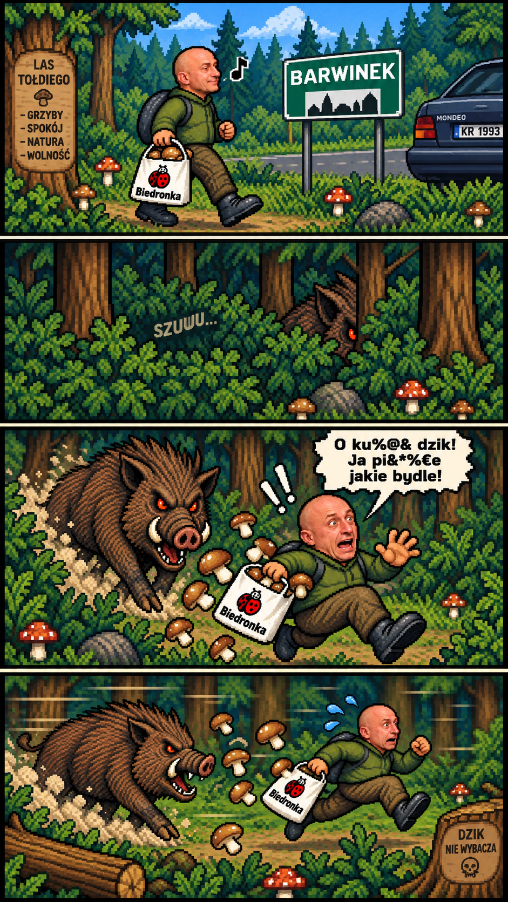

Poziom 1/5
🍄 0/0
👑 KRÓL PRAWDZIWKÓW
TOŁDI GRZYBIARZ
V168 — BELZEBUB: BOROWIK SZATAŃSKI
5 poziomów • rzeki • 3 mosty • strażnik • dzik • Król Prawdziwków • Belzebub • Mondeo • Biedronka
Sterowanie: 32-kierunkowy joystick dotykowy lub strzałki. Na poziomie 5 przycisk ATAK.
⚙️ USTAWIENIA
Wybór poziomu trudności
🎮 TWÓRCY GRY
Project Manager and Engineering:
MiskoV
Tester jakości:
KRZYŚ
Zgoda na publikację wizerunku:
TOŁDI
(dostał za to Żubrówkę Jabłuszko)
Wypił dziś 15 piw i jeszcze nie spadł:
Morcin
Oraz Twoja stara!! 😎
🛠️ TRYB DEBUGOWANIA
Menu testowe gry.
🎯 WYBÓR POZIOMU
🎬 SCENKI PRZERYWNIKOWE
Spis scenek w kolejności występowania w grze. Dotknij scenki, aby zobaczyć pełny podgląd.
PODGLĄD — bez uruchamiania scenki

15
⏸️ PAUZA
Kontynuować?
Czy jesteś za słaby Mordo?!
9
Kontynuacje: 3
GAME OVER
Tołdi został złapany!
🏆 WYGRANA!
Tołdi zebrał wszystkie grzyby i pokonał Króla Prawdziwków!